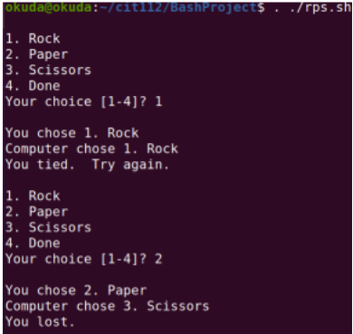
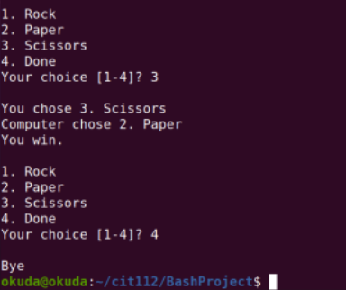

Individual BASH Project
- Task: Complete the exercises and take screenshots of your work.
- Purpose: Demonstrate your ability to create a rock, paper, scissors game in Linux using the provided script and demonstrate functionality.
- Purpose Part 2: Explain each line of code in a video recording and show functionality of your script.
Instructions
- Read: the project details and look at the template script file.
- Complete: each part of the project in your Linux system (AWS or local VM).
- Submit: your completed deliverables for each part of the project by the due date.
Project
Part 1: Overview
Create a rock, paper, scissors game using the provided script file.
Notice the TODO sections in the script that need to be completed.
Submission needs to include the completed bash script file (rps.sh) that allows you to play "Rock, Paper, Scissors" against the computer.
Your script should run like this:
 Requirements
Your bash script game should present the following set of features:
- Allows you to play Rock, Paper, Scissors against the computer
- Is menu-driven
- Runs continuously
- Terminates when option 4 is selected
- Plays according to the standard rule
- Displays the same or similar messages as shown in the example output
Your bash script must include the following constructs and statements:
- if
- while
- break
- echo
Next Steps
The scaffold script will have comments starting with TODO: You will need to finish that section of the script to meet the functionality described above.
- In your Ubuntu Linux (either AWS or local VM).
- Complete the project and ask AI for help as needed.
- Make sure your name is in the scenario or terminal for identity confirmation.
Part 2: Deliverables
Part 1: Functioning script (rps.sh) with your name in the file comments
Part 2: Gameplay video (you must be on video, your voice recording, and screensharing) recording and recording explaining each line of code.
Next Steps
- Upload your bash script (rps.sh) through Canvas.
- Record a screencast video of your “Rock, Paper, Scissors” game playing.
- Your voice must be understandable and recognizable.
- Your face is recogniable on the video recording.
- Talk through the logic of all the lines of the script to show you understand what your script is doing.
- Gameplay recording includes all four choices you can make (1. Rock, 2. Paper, 3. Scissors, 4. Done).
- Demonstrate your bash script will correctly produce three outcomes that are possible (You won, You lost, You tied).
- Your demonstration of the correct outcome need not be exhaustive. Just one instance of a win, one instance of loss, and one instance of a tie will do.
Part 3: Rules
- You may use any resources you like, including AI tools, to help you complete this assignment.
- You must understand and be able to explain all parts of your submission.
- Your submission must be done individually and your own work. If you use AI, you can, just cite it.
- You cannot work with another classmate to complete the assignment.
- You can reach out to the instructor or TA if you need help.
- You should try to do this first without referring to other sources.
- If you do use other resources, please share the specifics of what resources you used and how you used them in the video.
- You will not be penalized for using resources if you explain which resources you used and how you incorporated them into your script.
- Failing to indicated what resources you used could be conisdered cheating or if you do not follow the assignment instructions properly by using someone else's work without citing it.
The scaffolded shell script should not be changed other than adding to the TODO: code you write. Meaning, do not change the names of the functions or rewrite existing code. Changing the scaffold script will indicate that you did not work through the assignment as described above.
Submission
Submit rps.sh file created and your video walkthrough of the code line-by-line and a demonstration of the 4 options of the script working.